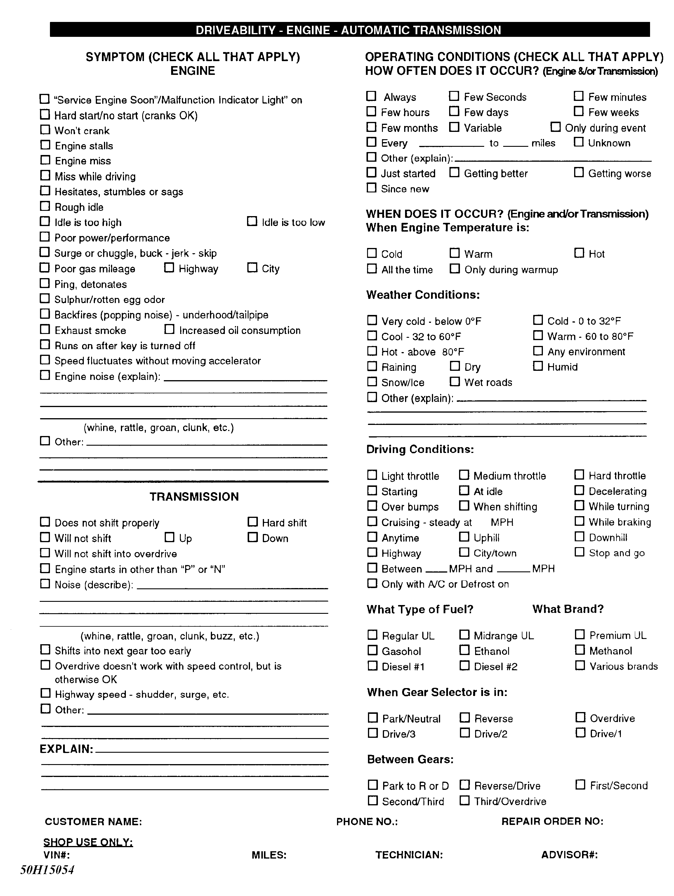
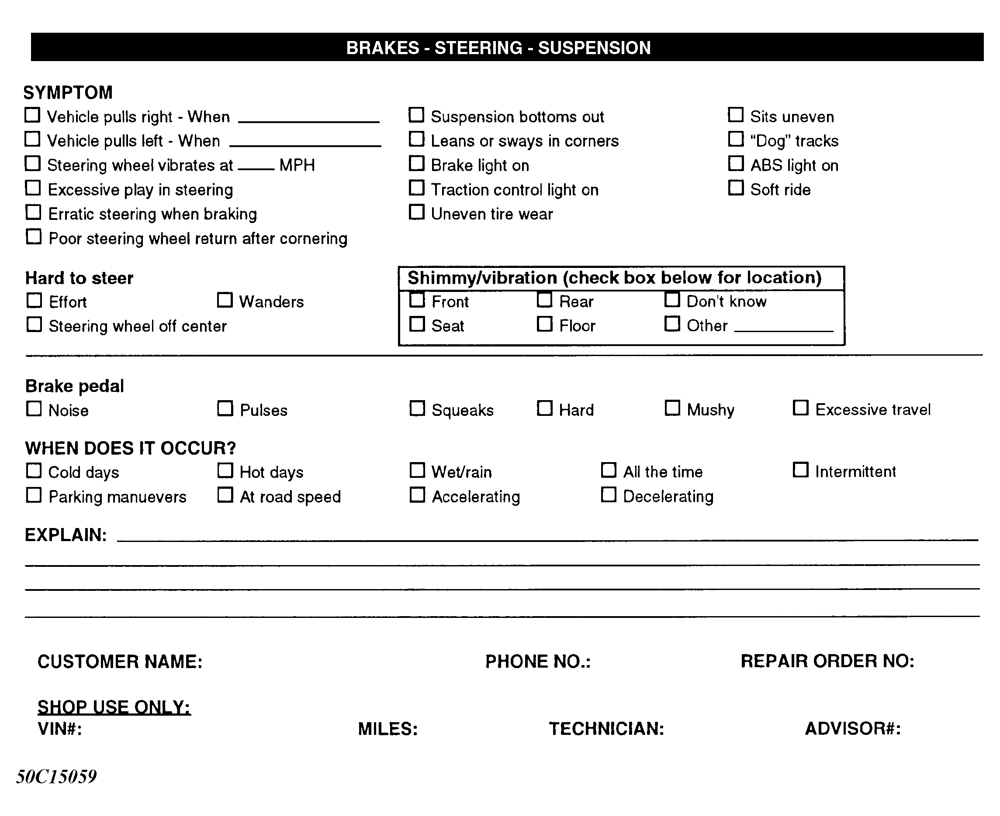
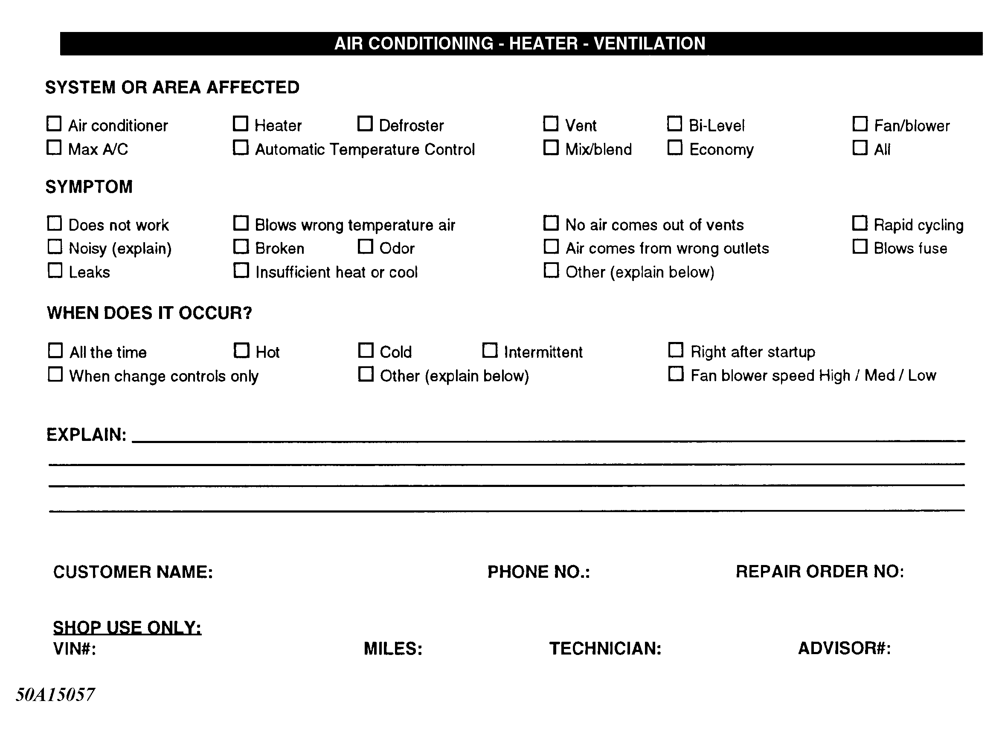
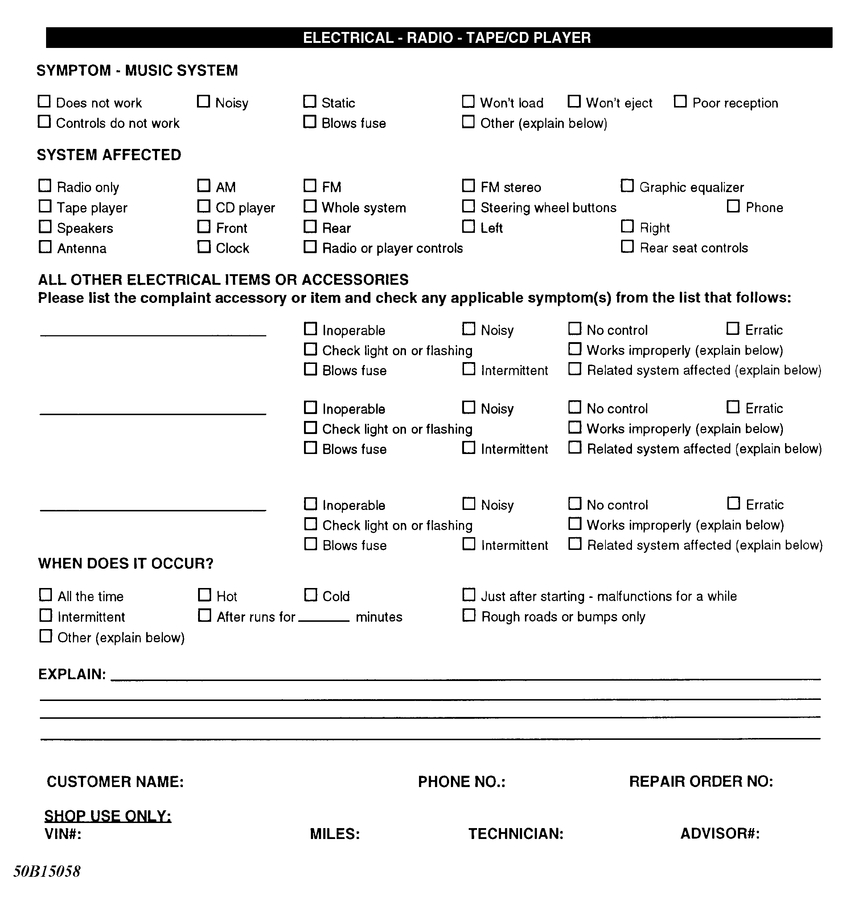
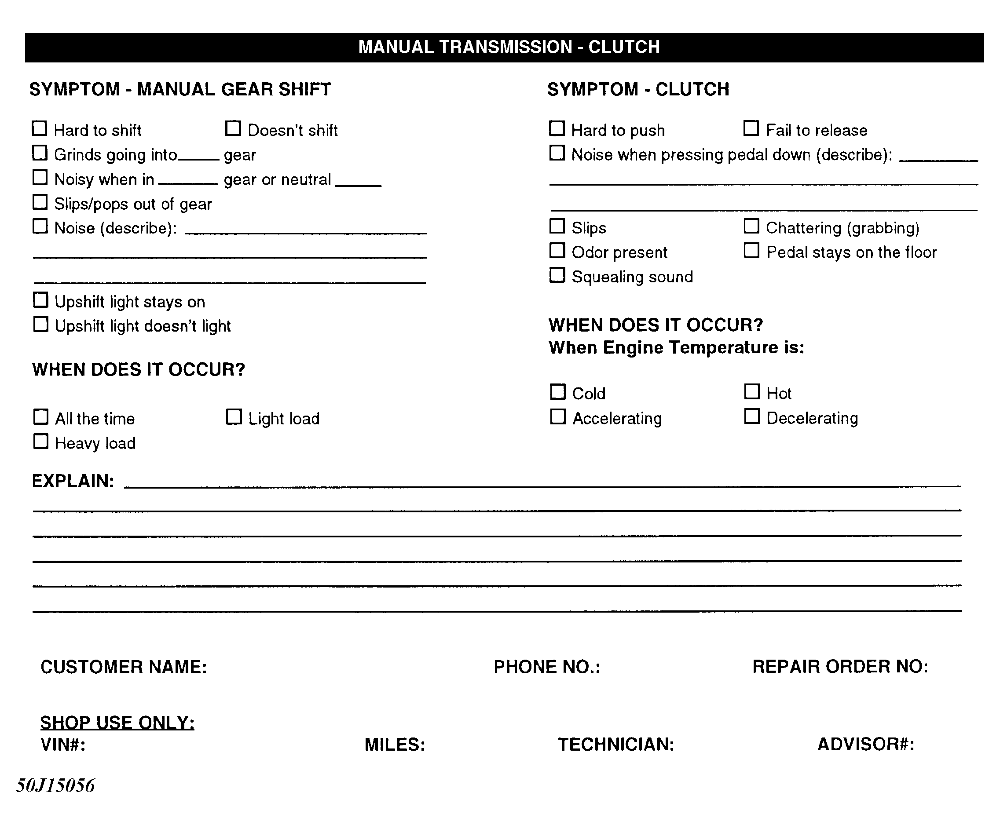
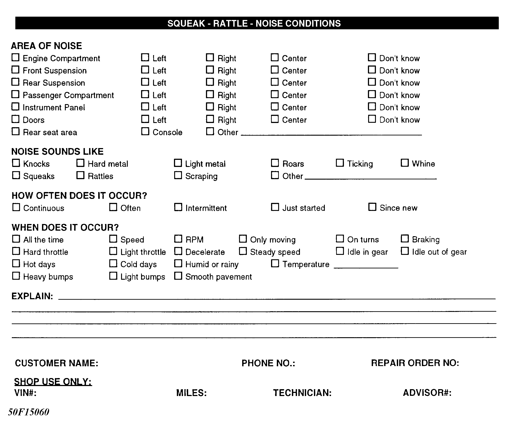
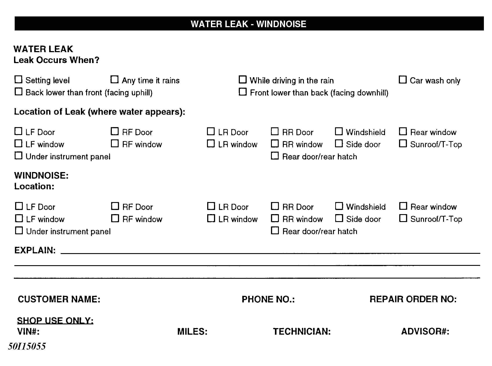

LEMON Manuals
: Even more car manuals for everyone: 1960-2025
Home
>>
Hyundai
>>
2022
>>
Elantra N Line, Standard Trans
>>
Repair and Diagnosis (Single Page)
>>
General Information
>>
Check Lists
>>
Symptom Check List Worksheet - General Information
>>
Symptom Check List Worksheets
>>
Individual System-Based Check Lists
Individual System-Based Check Lists
NOTE:
Have the service adviser fill out these forms with the customer whenever possible.
Fig 1: Engine Driveability & Automatic Transmission

Fig 2: Brakes, Steering, & Suspension

Fig 3: Air Conditioning, Heater & Ventilation

Fig 4: Electrical, Radio & Tape/CD Player

Fig 5: Manual Transmission & Clutch

Fig 6: Squeak, Rattle, & Noise Conditions

Fig 7: Water Leak & Wind Noise
